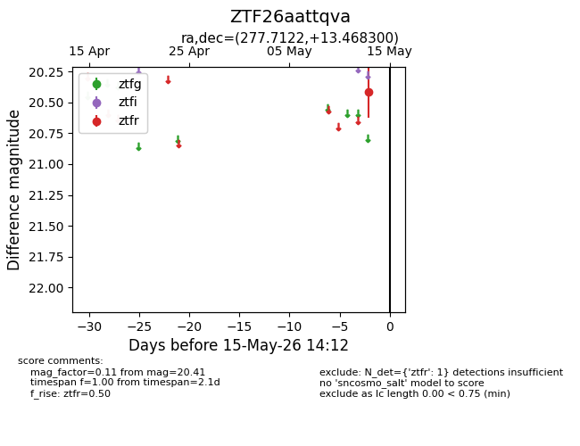
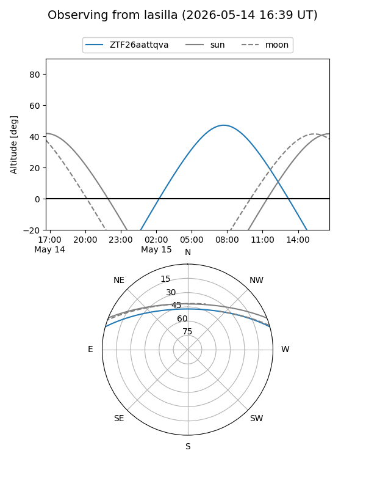
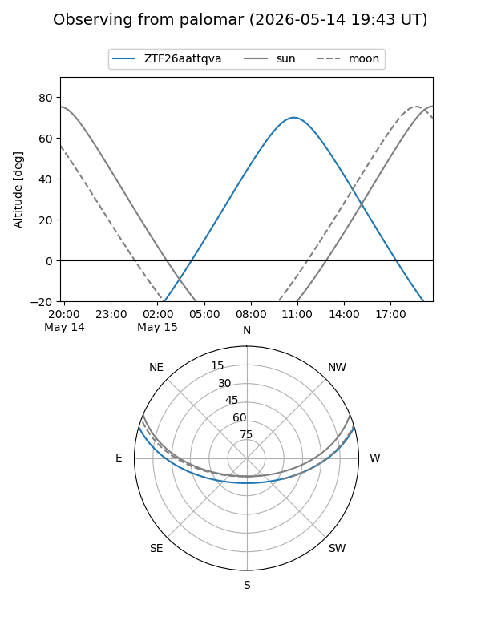
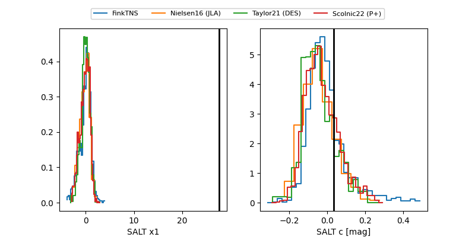

ZTF26aattqva
Target ZTF26aattqva at 2026-05-15 14:14
Aliases and brokers:
FINK: link
Lasair: link
ALeRCE: link
alt names
ZTF26aattqva (ztf,fink_ztf)
Coordinates:
equatorial (ra, dec) = 277.7122,+13.46830
equatorial (HMS+DMS) = 18:30:50.92,+13:28:05.88
galactic (l, b) = (42.7433,+10.59426)
Flags:
Photometry:
last ztfr=20.41
1 ztfr detections
Lightcurve

Visibility


Additional plots
